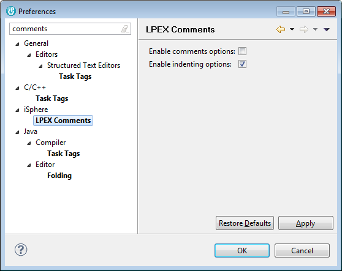
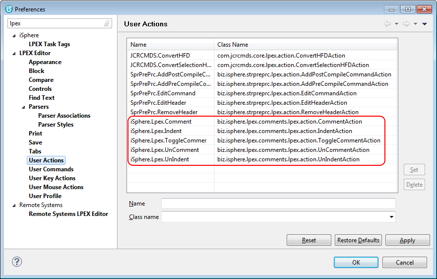

The available options are:
| Enable | - | Enables/disables the comment/uncomment options of the Lpex editor. |
The installed user actions are shown on the User Actions preferences page of the Lpex editor:

The associated user key action are shown on the User Key Actions preferences page of the Lpex editor: